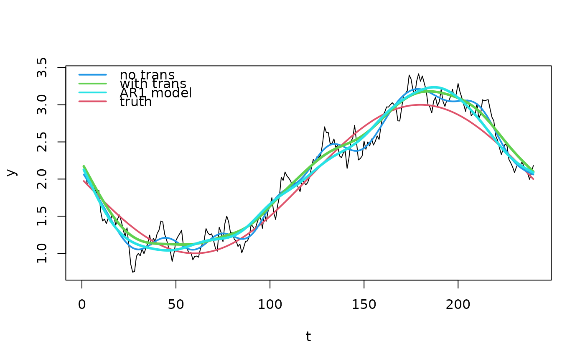

AR1_transform.RdThe transformer function takes a bamlss.frame object and transforms
the response and the design matrices to account for lag 1 autocorrelation. The method
is also known as Prais-Winsten estimation.
trans_AR1(rho = 0.1)
AR1(rho = 0.1)Specifies the correlation parameter at lag 1.
A transformer function which can be used in the bamlss call.
Johnston, John (1972). Econometric Methods (2nd ed.). New York: McGraw-Hill. pp. 259--265.
if (FALSE) ## Simulate AR1 data.
set.seed(111)
n <- 240
d <- data.frame("t" = 1:n)
## Nonlinear function.
f <- function(x) {
2 + sin(x / n * 2 * pi - pi)
}
## Correlated errors.
rho <- 0.8
e <- rnorm(n, sd = 0.1)
u <- c(e[1], rep(NA, n - 1))
for(i in 2:n){
u[i] <- rho * u[i - 1] + e[i]
}
## Response.
d$y <- f(d$t) + u
## Plot time-series data.
plot(d, type = "l")
## Estimate models without and with AR1 transformation.
b0 <- bamlss(y ~ s(t,k=20), data = d, criterion = "BIC")
#> BIC 133.0050 logPost -96.3165 logLik -42.5450 edf 8.7426 eps 0.3997 iteration 1
#> BIC -46.5041 logPost -6.5619 logLik 47.2096 edf 8.7426 eps 0.1806 iteration 2
#> BIC -158.706 logPost 49.5393 logLik 103.3108 edf 8.7426 eps 0.1157 iteration 3
#> BIC -241.750 logPost 99.3859 logLik 157.7076 edf 13.440 eps 0.0916 iteration 4
#> BIC -271.107 logPost 114.3087 logLik 179.9871 edf 16.214 eps 0.0511 iteration 5
#> BIC -275.423 logPost 117.0019 logLik 186.1356 edf 17.670 eps 0.0183 iteration 6
#> BIC -275.655 logPost 117.3236 logLik 187.4608 edf 18.112 eps 0.0031 iteration 7
#> BIC -275.659 logPost 117.3566 logLik 187.6373 edf 18.175 eps 0.0003 iteration 8
#> BIC -275.659 logPost 117.3591 logLik 187.6512 edf 18.180 eps 0.0000 iteration 9
#> BIC -275.659 logPost 117.3591 logLik 187.6512 edf 18.180 eps 0.0000 iteration 9
#> elapsed time: 0.13sec
#> Starting the sampler...
#>
#> | | 0% 2.62sec
#> |* | 5% 2.41sec 0.13sec
#> |** | 10% 2.13sec 0.24sec
#> |*** | 15% 2.01sec 0.35sec
#> |**** | 20% 1.89sec 0.47sec
#> |***** | 25% 1.80sec 0.60sec
#> |****** | 30% 1.68sec 0.72sec
#> |******* | 35% 1.57sec 0.85sec
#> |******** | 40% 1.46sec 0.97sec
#> |********* | 45% 1.34sec 1.10sec
#> |********** | 50% 1.22sec 1.22sec
#> |*********** | 55% 1.10sec 1.34sec
#> |************ | 60% 0.98sec 1.47sec
#> |************* | 65% 0.86sec 1.60sec
#> |************** | 70% 0.74sec 1.72sec
#> |*************** | 75% 0.62sec 1.86sec
#> |**************** | 80% 0.49sec 1.98sec
#> |***************** | 85% 0.37sec 2.10sec
#> |****************** | 90% 0.25sec 2.23sec
#> |******************* | 95% 0.12sec 2.35sec
#> |********************| 100% 0.00sec 2.48sec
b1 <- bamlss(y ~ s(t,k=20), data = d, criterion = "BIC",
transform = AR1(rho = 0.8))
#> BIC 135.7780 logPost -108.026 logLik -27.0972 edf 14.885 eps 0.4934 iteration 1
#> BIC -174.837 logPost 49.8385 logLik 107.3899 edf 7.2879 eps 0.1934 iteration 2
#> BIC -316.595 logPost 120.7175 logLik 178.2689 edf 7.2879 eps 0.1105 iteration 3
#> BIC -382.735 logPost 153.7875 logLik 211.3389 edf 7.2879 eps 0.0694 iteration 4
#> BIC -394.806 logPost 176.4595 logLik 217.3854 edf 7.2920 eps 0.0308 iteration 5
#> BIC -395.212 logPost 176.6629 logLik 217.5888 edf 7.2920 eps 0.0060 iteration 6
#> BIC -395.214 logPost 176.6635 logLik 217.5894 edf 7.2920 eps 0.0003 iteration 7
#> BIC -395.214 logPost 176.6635 logLik 217.5894 edf 7.2920 eps 0.0000 iteration 8
#> BIC -395.214 logPost 176.6635 logLik 217.5894 edf 7.2920 eps 0.0000 iteration 8
#> elapsed time: 0.16sec
#> Starting the sampler...
#>
#> | | 0% 2.26sec
#> |* | 5% 2.22sec 0.12sec
#> |** | 10% 2.05sec 0.23sec
#> |*** | 15% 1.96sec 0.35sec
#> |**** | 20% 1.88sec 0.47sec
#> |***** | 25% 1.77sec 0.59sec
#> |****** | 30% 1.68sec 0.72sec
#> |******* | 35% 1.56sec 0.84sec
#> |******** | 40% 1.45sec 0.97sec
#> |********* | 45% 1.34sec 1.10sec
#> |********** | 50% 1.22sec 1.22sec
#> |*********** | 55% 1.10sec 1.34sec
#> |************ | 60% 0.98sec 1.47sec
#> |************* | 65% 0.86sec 1.59sec
#> |************** | 70% 0.74sec 1.73sec
#> |*************** | 75% 0.62sec 1.85sec
#> |**************** | 80% 0.49sec 1.98sec
#> |***************** | 85% 0.37sec 2.11sec
#> |****************** | 90% 0.25sec 2.23sec
#> |******************* | 95% 0.12sec 2.36sec
#> |********************| 100% 0.00sec 2.48sec
## Estimate full AR1 model.
b2 <- bamlss(y ~ s(t,k=20), data = d, criterion = "BIC",
family = "AR1")
#> BIC 125.4305 logPost -97.6156 logLik -36.0174 edf 9.7426 eps 0.5998 iteration 1
#> BIC -85.1397 logPost 7.6696 logLik 69.2677 edf 9.7426 eps 0.1691 iteration 2
#> BIC -254.628 logPost 92.4137 logLik 154.0119 edf 9.7426 eps 0.1033 iteration 3
#> BIC -351.867 logPost 141.0333 logLik 202.6314 edf 9.7426 eps 0.0654 iteration 4
#> BIC -377.834 logPost 154.0167 logLik 215.6149 edf 9.7426 eps 0.0340 iteration 5
#> BIC -363.383 logPost 160.9263 logLik 216.8357 edf 12.824 eps 0.0089 iteration 6
#> BIC -363.389 logPost 160.9290 logLik 216.8384 edf 12.824 eps 0.0005 iteration 7
#> BIC -363.389 logPost 160.9290 logLik 216.8384 edf 12.824 eps 0.0000 iteration 8
#> BIC -363.389 logPost 160.9290 logLik 216.8384 edf 12.824 eps 0.0000 iteration 8
#> elapsed time: 0.24sec
#> Starting the sampler...
#>
#> | | 0% 3.45sec
#> |* | 5% 5.97sec 0.31sec
#> |** | 10% 4.19sec 0.47sec
#> |*** | 15% 3.51sec 0.62sec
#> |**** | 20% 3.14sec 0.79sec
#> |***** | 25% 2.90sec 0.97sec
#> |****** | 30% 2.66sec 1.14sec
#> |******* | 35% 2.44sec 1.31sec
#> |******** | 40% 2.24sec 1.49sec
#> |********* | 45% 2.03sec 1.66sec
#> |********** | 50% 1.84sec 1.84sec
#> |*********** | 55% 1.65sec 2.02sec
#> |************ | 60% 1.46sec 2.19sec
#> |************* | 65% 1.28sec 2.37sec
#> |************** | 70% 1.09sec 2.55sec
#> |*************** | 75% 0.91sec 2.73sec
#> |**************** | 80% 0.72sec 2.90sec
#> |***************** | 85% 0.54sec 3.08sec
#> |****************** | 90% 0.36sec 3.26sec
#> |******************* | 95% 0.18sec 3.43sec
#> |********************| 100% 0.00sec 3.61sec
rho <- predict(b2, model = "rho", type = "parameter")
print(range(rho))
#> [1] 0.765668 0.765668
## Estimated standard deviations.
sd0 <- predict(b0, model = "sigma", type = "parameter")
sd1 <- predict(b1, model = "sigma", type = "parameter")
sd2 <- predict(b2, model = "sigma", type = "parameter")
print(round(c(sd0[1], sd1[1], sd2[1]), 2))
#> [1] 0.11 0.00 0.10
## Plot fitted trends.
p0 <- predict(b0, model = "mu")
p1 <- predict(b1, model = "mu")
p2 <- predict(b2, model = "mu")
plot(d, type = "l")
lines(f(d$t) ~ d$t, col = 2, lwd = 2)
lines(p0 ~ d$t, col = 4, lwd = 2)
lines(p1 ~ d$t, col = 3, lwd = 3)
lines(p2 ~ d$t, col = 5, lwd = 3)
legend("topleft",
c("no trans", "with trans", "AR1 model", "truth"),
lwd = 2, col = c(4, 3, 5, 2), bty = "n")
